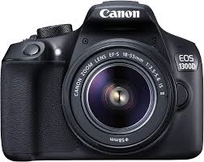
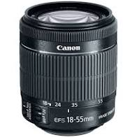
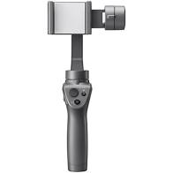

| Canon 1300D |
Camera Body (DSLR) |
Sensor: APS-C CMOS Sensor with 18 MP (sufficient resolution for large prints and image cropping)
ISO: 100-6400 sensitivity range (critical for obtaining grain-free pictures, especially in low
light)
Image Processor: DIGIC 4+ with 9 autofocus points (important for speed and accuracy of autofocus and
burst photography)
Video Resolution: Full HD video with fully manual control and selectable frame rates (great for
precision and high-quality video work)
Connectivity: WiFi, NFC and Bluetooth built-in (useful for remotely controlling your camera and
transferring pictures wirelessly as you shoot)
Lens Mount: EF-S mount compatible with all EF and EF-S lenses (crop-sensor mount versatile and
compact, especially when used with EF-S lenses) |
Great Eastern Trading Co. Store |
 |
| Canon EF-S 18-55mm f/3.5-5.6 is STM Lens |
Camera Lens (Kit Lens) |
EF-S Mount lens - 29-88mm (35mm Equivalent) - Aperture Range: f/3.5-38 - One Aspherical Element
Optical Image Stabilization - Stepping Motor, Internal Focusing System - Supports Movie Servo AF
Feature
Manual Focus Override in AF Mode - Constant Minimum Focus Distance: 9.8" - 58mm Filter Diameter
|
Great Eastern Trading Co. Store |
 |
| Canon EF-S 55-250mm F4-5.6 is STM Lens |
Camera Lens (Zoom Kit Lens) |
Focal length and maximum aperture: 55-250mm 1:4-5.6
Closest focusing distance: 0.85m/2.8 ft.
Lens construction: 15 elements in 12 groups
Diagonal angle of view: 27 Degree 50 ft. - 6 Degree 15 ft.
Rear focus system
Angle of view (horzntl, vertl, diagnl): 23º 20' - 5º 20', 15º 40'- 3º 30', 27º 50' - 6º 15'
|
Great Eastern Trading Co. Store |
 |
| Canon EF50MM F/1.8 STM Lens |
Camera Lens (Prime Lens) |
Metal mount with a new exterior design used.The lens is fully compatible with all full range of
Canon DSLR Camera.
Digital era coating suppresses flaring and ghosting, Distance Information: Yes, Lens construction
(elements/groups): 6/5
By using STM (gear type), AF drive noise is quieter than the existing products DC motor
By reducing the minimum focusing distance (45 cm -> 35 cm), maximum magnification is increased
(0.15x -> 0.21x)
As a fixed, non-zooming lens the EF 50mm f/1.8 STM delivers great image quality -enhanced sharpness,
more contrast, and less distortion |
Amazon |
 |
| Samsung Galaxy S9 Plus |
Mobile photography and videography |
Samsung brings together a blend of beautiful design and innovative technology in forging the S9+. It
provides a plethora of features such as augmented reality emojis, Super Slow-mo, Live Translation,
Intelligent Scan, which are run seamlessly by an octa-core processor and 6 GB of RAM. The 14.73-cm
(5.8) Quad HD+ Super AMOLED display coupled with the Dolby Atmos surround-sound technology provide a
theatre-like feel while watching videos. Capture and savour your moments with the (12 MP + 12 MP)
rear camera and the 8 MP front camera |
Flipkart |
 |
| DJI Osmo Mobile 2 Handheld Gimbal Stabilizer for Smartphone |
Handheld Video Stabilization for Smartphones |
The Osmo Mobile 2 is a handheld smartphone gimbal made for the storyteller in all of us, whatever
your passion, wherever your destination, and whenever you feel inspired, capture moments with
cinematic movement and incredible ease
The Osmo Mobile 2 was built to film on the go, just select your subject and ActiveTrack will follow,
using built-in sensors and a brushless motors to ensure stability
Now you can take your story anywhere, the Osmo Mobile 2 is made of a high-strength composite
material cuts the weight to just 485g, perfect for all-day use
Go live, with up to 15 hours of battery life, the Osmo Mobile 2 can also charge your smartphone for
hours of streaming. Beautify mode also keeps you looking great in front of the camera, Battery: 2600
mAh, Voltage : 7.2 volts
Turn everyday situations into incredible moments with Time-lapse, shoot blooming flowers and rolling
clouds, recording all their movements in a stable shot
For aspiring filmmakers, a new built-in zoom slider lets you completely operate your smartphone
camera from the handle with more fluid, cinematic zoom, you can even produce dolly zoom - a visual
effect that only professional film sets could produce
Adventures allow us to stumble upon breathtaking landscapes and stunning architecture, relive these
moments with high-definition panoramas |
Amazon |
 |
| DJI Tello |
Nano Drone for videography |
Equipped with a high-quality image processor, the Tello drone shoots incredible photos and videos.
Even if you don’t know how to fly, you can record pro-level videos with EZ Shots and share them on
social media from your smartphone.
Camera features 5MP (2592x1936) photos and HD720 videos at a maximum flight time of 13 minutes.
Tello has two antennas that make video transmission extra stable and a high-capacity battery that
offers impressively long flight times.
Thanks to all the tech that Tello’s packing, like a flight controller powered by DJI, you can
perform awesome tricks with this mini drone. Flying has never been so fun and easy!
What you get: RyzeTech Tello powered by DJI, 4x Propellers (Pair), Propeller Guards (Set), Battery,
Micro USB Cable, Propeller Removal Tool
Video capture resolution: HD 720p |
Amazon |
 |
| techlife solutions Jmary 2264 tripod + monopod |
Tripod for photography and videography |
Jmary Brand Professional High quality Tripod+Monopod with Maximum load: 5 kgs
3 way head pan . The maximum height of: 6ft. folded height is 1.9ft. Integrated rubber feet - non
Slip and durable .
High Quality Aluminium Profiling giving tripod a robust look and marvelous finishing.
6ft height stand alone monopod with integrated rubber feet , High quality aluminium leg.
Light weight and easy to carry .Bottom have attached hook to hang the camera to rest. the total unit
of tripod and monopod Weight is 1.65 kgs. |
Amazon |
 |